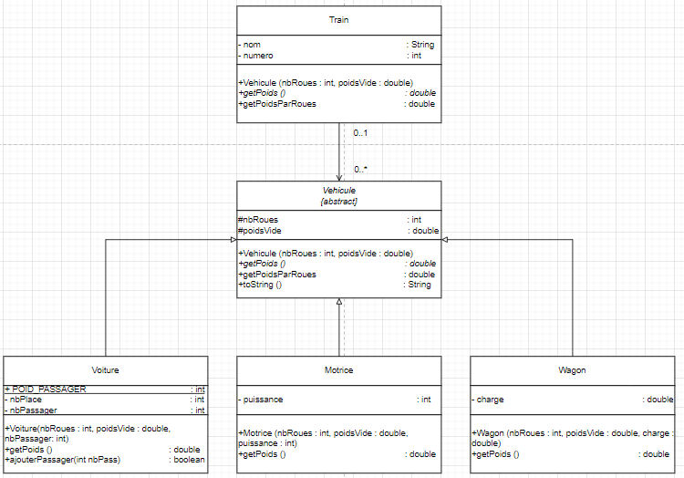

Un TP principalement penché sur l'héritage et les classe abstract de java, ce TP est un de mes TP préférés, non seulement parce qu'il touche à quelque choses que j'aime beaucoup (je parle ici de l'héritage, pas des trains), mais aussi car j'ai plus rajouté une fonctions en plus d'apporté quelque amélioration graphique sur ce TP.
Le sujet consisté à crée différentes classe java, nous permettons la créations d'un train composé d'au début d'un wagon motrice, et ensuite, d'autre type de wagon. Ici, le TP était la pour nous apprendre le polymorphisme en plus de la redéfinition de certaines fonctions.
On a du donc bien évidemment rédiger un diagramme de classe avant de passer à la réalisation du code.
